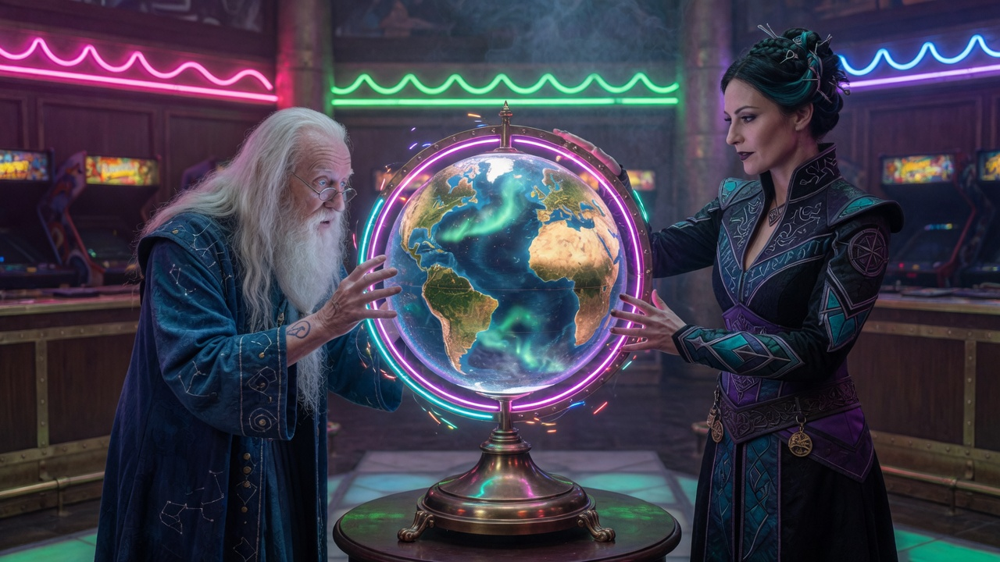
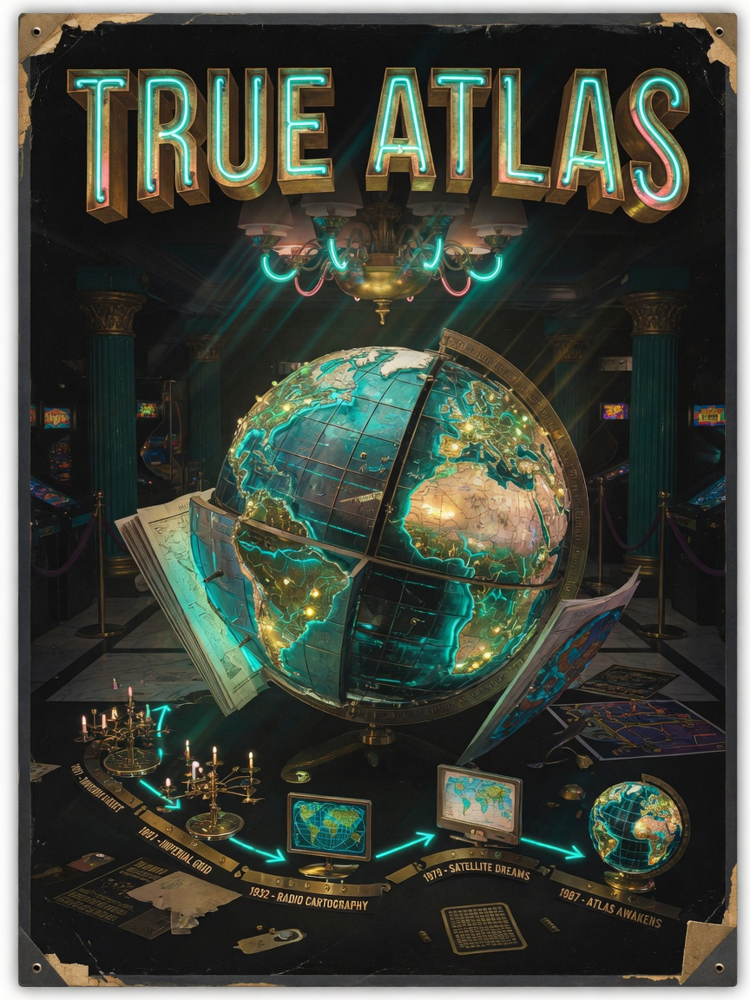
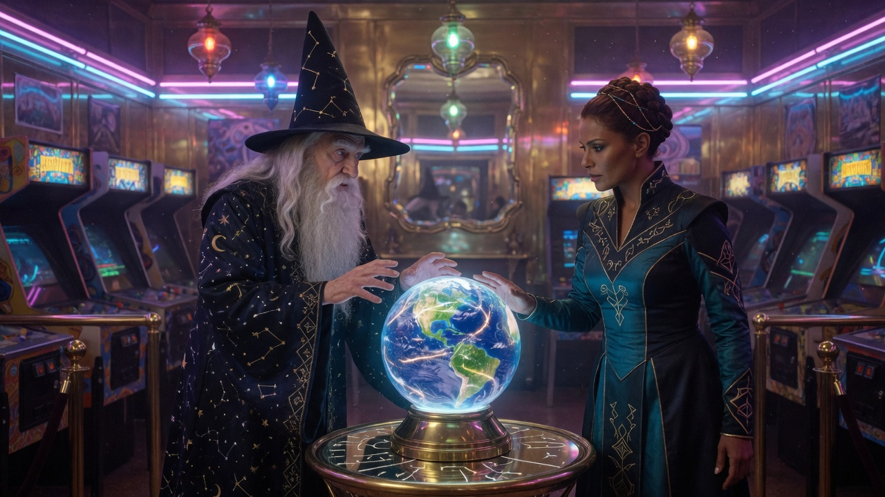

World history atlas. The globe is the event.
Build: true-atlas-v8.html
No authentic gameplay screenshot or footage yet. Hero art stays in the carousel above — not copied here. Owner can drop real map captures later.
Map UI in-file. Click and drag the globe. No combat.
Cinematic stills are marketing. The playable build is still a history atlas.
Comments / profiles / saves — not built. Version history will live here.